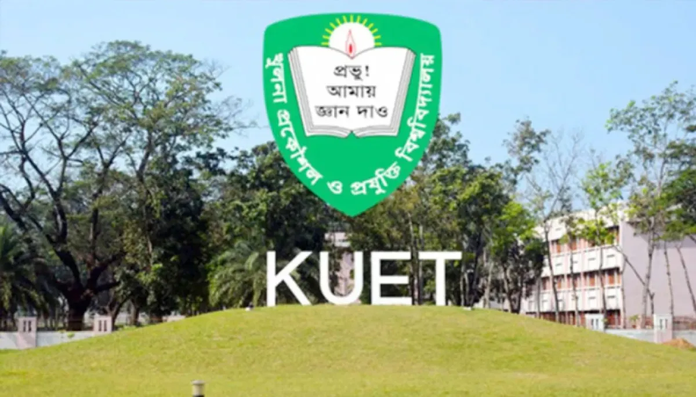

Urban and Regional Planning(URP)
Khulna University Engineering & Technology
Core Areas of Interest:
- GIS & Remote Sensing: For Spatial Data Analysis.
- Geo-AI:Using Artificial Intelligence in Urban Planning.
- Sustainability:Designing eco-friendly rural and urban spaces.
- Software Skills:Learning ArcGIS,AutoCAD and Python.
Campus Inspiration:

Building the cities of tomorrow.